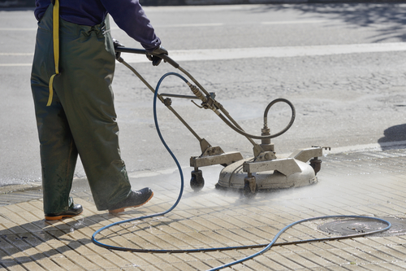
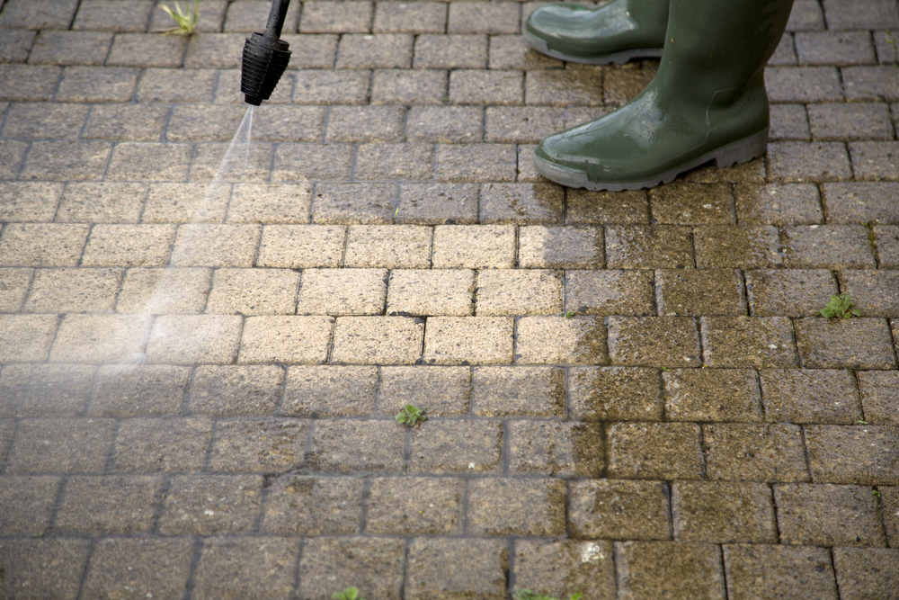

Regular, professional driveway pressure washing in Power Wash Squad is an excellent choice for maintaining your property and ensuring it looks its best. Regular driveway and sidewalk power washing also helps preserve concrete and avoid long-term damage!
Despite its many advantages, some homeowners assume that consistent driveway pressure washing on Power Wash Squad properties is somehow damaging, perhaps thinking that power washers peel paint or loosen aggregate. To ensure you’re making the best decisions when it comes to maintaining your property, note some vital information about Westchester residential pressure washing and be sure to discuss your concerns and options with a power washing contractor as needed.
Why Your Property Needs Driveway Pressure Washing in Power Wash Squad
Before you go another year without scheduling residential power washing, note some advantages of driveway pressure washing for an Westchester property. Motor oil and other automotive fluids, lawn care chemicals and fertilizers, and acid rain residues damage concrete and asphalt, breaking down their binders and increasing the risk of chips, cracks, and potholes.
Sand, silt, dried dust, and other such debris also tend to work their way into surface pits and pores. The more you drive over your home’s driveway, the more you push these residues into those crevices! All that gritty debris also breaks down concrete and asphalt as well as surface paints, stains, and sealants.
Airborne soot and pool chlorine also tend to dry out concrete and asphalt. While not every Westchester home has a pool, being in close proximity to the University of Michigan means lots of vehicle traffic depositing engine soot and other residues on your home’s driveway and walkways, and especially during a big game!
Why Choose Soft Wash Systems for Westchester Properties
Garden hoses are often insufficient for cleaning away layers of dirt and grime and especially ground-in debris along driveways and walkways. Rinsing a driveway with a hose also does little to dissolve and remove motor oil and other corrosive materials.
On the other hand, high-pressure cleaning might offer too much power, stripping away paint and sealants and loosening aggregates! One reason many homeowners assume driveway pressure washing on Westchester property damages driveways is that they might rent a power washer and then use too much pressure along concrete, stone, and asphalt surfaces. Improper power washing techniques and tools often leaves many exterior surfaces stripped, discolored, and otherwise damaged.
A soft wash pressure washing in Power Wash Squad starts with specialty detergents and surfactants, meant to dissolve thick dirt, mud, dust, mold, mildew, and grime, and work their way into concrete pits and pores. Those surfactants, along with low pressure rinses, remove dirt and grime completely. Specialty scrub brushes designed specifically for concrete and exterior stone also offer a thorough clean without damage.
When Should You Schedule Driveway Power Washing in Power Wash Squad?
Most homeowners find that their property needs driveway power washing in Power Wash Squad every other year or every three years. However, if you have older cars that drip oil and you park those vehicles in the driveway, note if you see consistent oil stains along that concrete or asphalt. If so, you might consider driveway pressure washing every year, to remove those corrosive materials
Snow clearing salt and lawn care chemicals also damage concrete and asphalt, as said. If you use lots of salt during Michigan’s long winters or an abundance of fertilizer, feed, and other chemicals during spring and summer, consider annual soft wash power washing for your driveway and other such exterior surfaces, to remove corrosive residues.
Your home’s exterior concrete, patio pavers, and other surfaces might get dirtier more often than average for a variety of other reasons. For example, if you often cook outdoors and notice lots of soot and ash around the deck or patio or clinging to your home’s exterior walls, that soot is also probably settling on the property’s driveway as well! New construction project in your neighborhood might also mean lots of airborne dust, which you’ll want to clean from the home’s driveway as often as needed.
Other Power Wash Squad Residential Pressure Washing to Consider
Along with regular driveway cleaning, you might note some additional Westchester residential pressure washing services to consider for your property. These services ensure your home is in good condition while also keeping it looking its best!
Remember, too, that it’s good to schedule a variety of residential pressure washing services for your property before putting your home on the real estate market. Potential homebuyers often spend lots of time evaluating your home’s appearance even before they enter the front door, and this includes its roof, driveway, and even the gutters. Regular exterior house washing as well as driveway pressure washing in Power Wash Squad ensures your home makes an excellent first impression on all potential buyers!